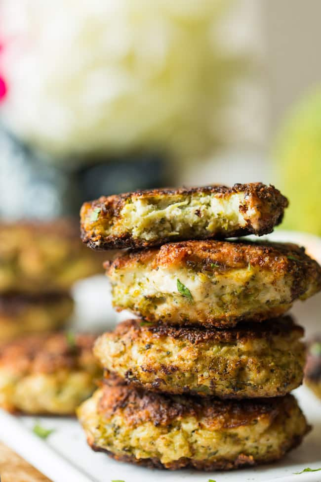

Chicken Broccoli Fritters

A delicious combination of chicken and broccoli held together by parmesan, almond flour, and love.
Ingredients
- 1 large broccoli head
- 1 lb chicken breast, cubed
- 1/2 cup flour or almond flour
- 1/2 cup parmesan cheese
- 2 eggs
- 2 garlic cloves, minced
Steps
- Steam broccoli until tender, then roughly chop
- Add broccoli and all ingredients in bowl and mix well
- Add enough oil to a skillet to cover base. Heat to medium high
- Dollop 1/4 cup mixture into skillet, then pat down
- Cook 2.5 minutes until deep golden, then flip
and cook additional 2 minutes
- transfer to wire wrack, optionally keep warm in oven (210 F) while cooking remaining mixture.